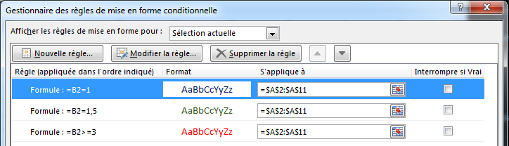

Introduction
Définition
C’est un logiciel qui permet de créer des tables de calculs illustrées par des graphiques.
Exemples de logiciels tableurs :

 Exemples de logiciels tableurs les plus courants : Microsoft Excel et LibreOffice Calc
Exemples de logiciels tableurs les plus courants : Microsoft Excel et LibreOffice Calc
Eléments
La figure suivante résume l'ensemble des éléments d'un document Tableur :
- Un document tableur est appelé : Classeur
- Un classeur est composé d'une ou plusieurs feuilles.
- Une feuille est formée par un ensemble de cellules.
- Une cellule est l'intersection entre une colonne (exemple A) et d'une
ligne
(exemple 7). A7 est appelé la référence de la cellule.
 Composition d'un document tableur
Composition d'un document tableur
Références de cellules
A1:B8 est appelée une plage de cellules.
 Plage de cellules
Plage de cellules
La référence d'une cellule peut être :
- Une référence relative : B5 (Colonne B, Ligne 5)
- Une référence absolue : $B$5 (Colonne B fixe, Ligne 5fixe)
- Une référence mixte (colonne fixe) : $B5 (Colonne B fixe, Ligne 5)
- Une référence mixte (ligne fixe) : B$5 (Colonne B, Ligne 5 fixe)
 Référence relative
Référence relative
 Référence absolue
Référence absolue
L'intérêt de ces types de références est visible lorsqu'on souhaite recopier une formule
vers la droite ou vers le bas.
Activité Pratique
On demande de :
- Télécharger le classeur suivant : ref_cellules.xlsx
- Ouvrir la feuille Références relatives et compléter par la formule manquante.
- Ouvrir la feuille Références absolues et compléter par la formule manquante.
- Ouvrir la feuille Références mixtes et compléter par la formule manquante.
Fonctions conditionnelles
Fonction SI
La fonction SI permet de renvoyer un résultat selon deux ou plusieurs conditions.
Activité 3
On demande de calculer l'appréciation d'un élève après un examen national.
- Admis, si la moyenne >= 10
- Refusé, si la moyenne < 10
 Calculer l'appréciation d'un élève en utilisant la fonction SI
Calculer l'appréciation d'un élève en utilisant la fonction SI
(1) =SI(B2>=10;"Admis";"Refusé")
ou aussi
(1) =SI(B2<10;"Refusé";"Admis")
Activité Pratique
On demande de :
- Télécharger le classeur suivant : fonction_si.xlsx
- Compléter la feuille Activité 3.
Activité 4
On demande de calculer l'appréciation d'un élève après un examen national en tenant compte de la possibilité
de
passage d'une session de contrôle.
- Admis, si la moyenne >= 10
- Contrôle, si la 9 <= moyenne < 10
- Refusé, si la moyenne < 9
Activité Pratique
On demande de :
- Télécharger le classeur suivant : fonction_si.xlsx
- Compléter la feuille Activité 4.
Activité 5
On souhaite retrouver le degré de satisfaction d'un client d'un restaurant. Les clients notent le service
d'une
façon anonyme les service du restaurant en utilisant de 0 à 5 étoiles.
On demande de :
- Calculer le pourcentage de satisfaction, pourcentage de satisfaction = nombre d'étoiles * 20
- Calculer le degré de satisfaction du client :
- Satisfait, si le pourcentage >= 80
- Insatisfait, si le pourcentage < 80
 Calculer le degré de satisfaction d'un client en utilisant la fonction SI
Calculer le degré de satisfaction d'un client en utilisant la fonction SI
(1) =A2*20
(2) =SI(B2>=80;"Satisfait";"Insatisfait")
Activité Pratique
On demande de :
- Télécharger le classeur suivant : fonction_si.xlsx
- Compléter la feuille Activité 5.
Fonction NB.SI
La fonction NB.SI compte le nombre de cellules d’une plage qui répondent à un critère donné.
Activité 6
On souhaite retrouver le nombre de filles et de garçons dans un groupe d'élèves. On dispose du tableau
suivant
:
Calculer le nombre de filles et de garçons dans un groupe d'élèves en utilisant la fonction
NB.SI
(1) =NB.SI(B2:B6;"F")
(2) =NB.SI(B2:B6;"G")
Activité Pratique
On demande de :
Activité 7
Un développeur de circuits imprimés souhaite faire des statistiques sur le nombre de cartes développées en
fonction de leurs surface. Pour cela il a dressé le tableau suivant :
On demande de calculer le nombre de cartes de chaque catégorie.
 Calculer le nombre de cartes électroniques selon leurs dimensions en utilisant la fonction
NB.SI
Calculer le nombre de cartes électroniques selon leurs dimensions en utilisant la fonction
NB.SI
(1) =NB.SI(C2:C7;"<=40")
(2) =NB.SI(C2:C7;"<=100")
(3) =NB.SI(C2:C7;">200")
Activité Pratique
On demande de :
Fonction SOMME.SI
La fonction SOMME.SI permet de calculer la somme des valeurs d’une plage (plage : deux
cellules
au minimum d’une feuille de calcul. Une plage peut contenir des cellules adjacentes ou non adjacentes.) qui
répond
à un critère spécifié.
Activité 8
On demande de calculer la somme des valeurs qui sont supèrieurs ou égaux à 15. Et la somme des valeurs
inférieurs
à 15.
 Calculer la somme d'un ensemble de valeurs selon une condition en utilisant la fonction
SOMME.SI
Calculer la somme d'un ensemble de valeurs selon une condition en utilisant la fonction
SOMME.SI
(1) =SOMME.SI(A2:A9;">=15")
(2) =SOMME.SI(A2:A9;"<15")
Activité Pratique
On demande de :
Activité 9
Un drugstore dispose d'un stock de pièces de monnaie de valeur (50 Millimes) et (100 Millimes), pour compter
le
montant total de pièces il a dressé le tableau suivant dans un tableur :
 Calculer le montant pour chaque type de pièce de monnaie en utilisant la fonction SOMME.SI
Calculer le montant pour chaque type de pièce de monnaie en utilisant la fonction SOMME.SI
(1) =A2*B2
(2) =SOMME.SI(A2:A6;0,05;B2:B6)
ou
=SOMME.SI($A$2:$A$6;E2;$B$2:$B$6)
(3) =SOMME.SI(A2:A6;0,1;B2:B6)
(4) =SOMME.SI(A2:A6;0,05;C2:C6)
ou
=SOMME.SI($A$2:$A$6;E2;$C$2:$C$6)
(5) =SOMME.SI(A2:A6;0,1;C2:C6)
Activité Pratique
On demande de :
Fonctions utiles
Tri
L'opération de tri consiste à ordonner les éléments d'un tableau selon les valeurs d'une ou
de plusieurs colonnes en ordre croissant (du plus petit au plus grand) ou en ordre décroissant.
Activité 10
Nous souhaitons ordonner un groupe d'élève en ordre croissant de leurs noms.
 Tableau non ordonné
Tableau non ordonné
 Tableau ordonné par ordre alphabétique des noms des élèves
Tableau ordonné par ordre alphabétique des noms des élèves
Activité Pratique
On demande de :
- Télécharger le classeur suivant : tri.xlsx
- Compléter la feuille Activité 10.
üìπ Proc√©dure de tri
- Sélectionner la plage de données à trier (dans l'exemple A1:B9)
- Dans l'onglet Accueil, rubrique Edition, cliquer pour dérouler le menu
- Sélectionner Tri personnalisé...
 Procédure de tri, étape 2/3
Procédure de tri, étape 2/3
 Procédure de tri, étape 3/3
Procédure de tri, étape 3/3
Activité 11
Recopier le tableau précédent dans une nouvelle feuille, puis trier les élèves par ordre décroissant de leurs
moyennes.
Tableau initial non ordonné
 Tableau ordonné par ordre décroissant des moyennes des élèves
Tableau ordonné par ordre décroissant des moyennes des élèves
On demande de :
- Télécharger le classeur suivant : tri.xlsx
- Compléter la feuille Activité 11.
Alignement
On veut centrer le contenu d'une cellule sur plusieurs lignes, comme dans la figure qui suit.
Contenu de la cellule sans mise en forme
Cellule centrée sur plusieurs lignes
üìπ Proc√©dure d'alignement sur plusieurs lignes
- Sélectionner les cellules à mettre en forme
- Cliquer le bouton droit de la souris, pour dérouler le menu contextuel, puis sélectionner Format
de
cellule
- Ouvrir l'onglet Alignement, sélectionner Alignement du texte :
- Horizontal : Centré
- Vertical : Centré
- Cocher la case d'option Renvoyer à la ligne automatiquement
 Alignement, étape 2/4
Alignement, étape 2/4
 Alignement, étapes 3/4 et 4/4
Alignement, étapes 3/4 et 4/4
üìπ Activit√© 12
Recopier le tableau suivant tout en respectant la mise en forme de son entête.
Calculer les montants manquants.
 Exercice d'application sur l'alignement
Exercice d'application sur l'alignement
On demande de :
- Télécharger le classeur suivant : mise_en_forme.xlsx
- Compléter la feuille Activité 12.
Mise en forme conditionnelle
Introduction
La mise en forme conditionnelle permet de mettre en forme les cellules (Couleur, Remplissage, Bordure, etc.)
selon
une ou plusieurs critères.
üìπ Activit√© 13
On demande de colorier :
- en rouge
les notes infèrieures à 10,
- en vert
les notes supèrieures ou égales à 10.
 Notes de l'élève avant la mise en forme
Notes de l'élève avant la mise en forme
Notes de l'élève après la mise en forme conditionnelle
Activité Pratique
On demande de :
Procédure
- Sélectionner la plage de cellules C2:C11
- Dérouler le menu Mise en forme conditionnelle, cliquer la commande Gérer les règles...
- Le dialogue Gestionnaire de règles de mise en forme conditionnelles apparaît sur l'écran, cliquer
le
bouton Nouvelle règle...
- Le dialogue Nouvelle règle de mise en forme est affichée, sélectionner l'option Appliquer une
mise
en
forme uniquement aux cellules qui contiennent
- En bas du dialogue, modifier le contenu des champs du formulaire : Valeur
de la cellule infèrieure
à 10
- Cliquer sur le bouton Format... pour définir la mise en forme nécessaire,
- Refaire les étapes 3, 4, 5 et 6, pour colorier en vert
les cellules dont la Valeur
de la cellule supèrieure
ou égale à 10.
Etape 2/5, dérouler le menu Mise en forme conditionnelle
Etape 3/5, le dialogue Gestionnaire de règles de mise en forme conditionnelles apparaît sur
l'écran
Etape 4/7 et 5/7, le dialogue Nouvelle règle de mise en forme
Etape 6/7, sélectionner le format de cellule
 Etape 7/7, le Gestionnaire de règles de mise en forme conditionnelles contient les deux règles
souhaitées
Etape 7/7, le Gestionnaire de règles de mise en forme conditionnelles contient les deux règles
souhaitées
üìπ Activit√© 14
Mettre en rouge les matières ayant un coefficient supérieur ou égal à 3, en
vert les matières ayant un coefficient
1,5 et en bleu les matières ayant un coefficient 1.
 Résultat de la mise en forme conditionnelle
Résultat de la mise en forme conditionnelle
 Utiliser une formule pour déterminer pour quelles cellules le format sera appliqué
Utiliser une formule pour déterminer pour quelles cellules le format sera appliqué

L'ensemble des règles de mise en forme utilisée dans cette activité
Activité Pratique
On demande de :
Graphiques
Définition
Le tableur permet d'illustrer les tables de calculs par des graphiques.
üìπ Activit√© 15
Un magasin possédant des filiales dans plusieurs villes souhaite comparer les ventes d'un article dans ses
filiales pour les année 2016, 2017 et 2018. Pour cela, il dresse le tableau suivant :
Historique des ventes d'un article dans les magasins
Voici le résultat souhaité :
 Ventes par magasin
Ventes par magasin
 Ventes par année
Ventes par année
Activité Pratique
On demande de :
- Télécharger le classeur suivant : graphiques.xlsx
- Compléter la feuille Activité 15.
Procédure
- Sélectionner la plage de cellules : A1:D5
- Ouvrir l'onglet Insertion, dans la rubrique Graphiques cliquer l'icône

- La fenêtre Insérer un graphique est affichée, sélectionner un type d'histogramme
- Valider
 Etape 2/4, Insertion d'un graphique
Etape 3/4, sélection du type du graphique
Etape 2/4, Insertion d'un graphique
Etape 3/4, sélection du type du graphique